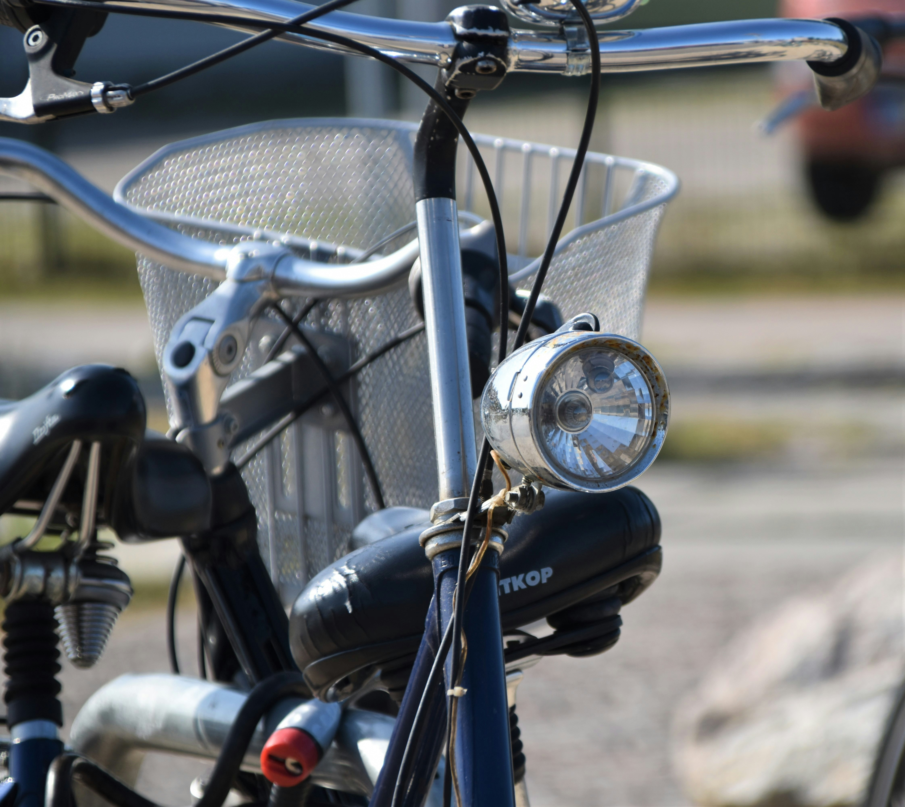

Lights
These parts were not part of the Master's thesis project and need further development. If you want to help out, join the community.

These parts were not part of the Master's thesis project and need further development. If you want to help out, join the community.
